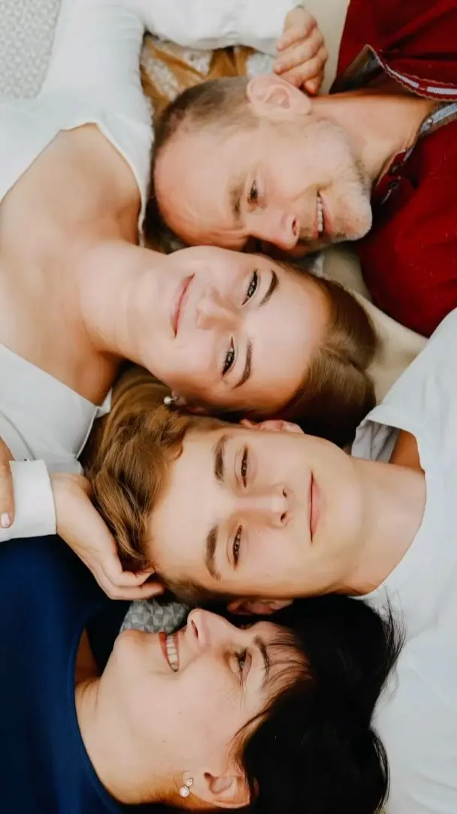

Pohlednice č. 1
Rodina a děti
Fotíme venku v přírodě, nebo u vás doma za denního světla. Nejvíc mě baví momentky, ve kterých jste spolu takoví, jací opravdu jste.
Pro: vás · Od: Tereza
Rodinná a portrétní fotografka — Rychnov nad Kněžnou, okres Rychnov nad Kněžnou
Ahoj, jsem Tereza. Fotím lidi, kteří k sobě patří.
Napište miPocházím z Kostelce nad Orlicí ↙
Fotka jako živá vzpomínka, ne jen obrázek.

O mně
Pocházím z Kostelce nad Orlicí a tvořím odmalička. Chodila jsem na výtvarný i hudební obor ZUŠ, jako saxofonistka jsem hrála v souborech od klasiky přes jazz po avantgardu a vystudovala jsem Sdružená uměnovědná studia na Masarykově univerzitě v Brně. Dnes žiji v Rychnově nad Kněžnou s manželem a dvěma syny.
K fotografii jsem se dostala kolem roku 2010, kdy mi do ruky přišla analogová zrcadlovka Zenit-B po dědovi. Nosila jsem ji všude a nejvíc mě bavilo fotit lidi kolem sebe. Později přišla digitální zrcadlovka a s ní i první známí mých přátel, kteří chtěli, abych zachytila jejich příběh.
Ráda fotím lidi v jejich přirozenosti, proto ode mě nečekejte velké retuše. Upravuji jen drobné kosmetické vady. Fotka pro mě není jen obrázek, ale živá vzpomínka na chvíle a lidi, které máte rádi.
Co fotím
Pohlednice č. 1
Fotíme venku v přírodě, nebo u vás doma za denního světla. Nejvíc mě baví momentky, ve kterých jste spolu takoví, jací opravdu jste.
Pro: vás · Od: Tereza
Pohlednice č. 2
Portréty bez rozsáhlých retuší, upravuji jen drobné kosmetické vady. Věřím, že vám to na fotce může slušet i bez berliček.
Pro: vás · Od: Tereza
Pohlednice č. 3
Fotky z pohybu a z toho, co vás baví. Ve vašem prostředí a s přirozeným světlem.
Pro: vás · Od: Tereza
Portfolio
Jak to probíhá
Ozvěte se e-mailem, telefonem nebo přes formulář. Domluvíme se, co si od focení představujete.
Fotím v rámci okresu Rychnov nad Kněžnou. Místo můžete navrhnout vy, nebo ho vyberu já, a za slunečného počasí fotíme ráno nebo před západem slunce.
Nebudu vás moc aranžovat, spíš pozoruji a hledám momentky. Když prší, focení klidně přeložíme na jiný den.
Upravuji jen drobné kosmetické vady. Hotové fotografie vám obvykle do tří týdnů pošlu přes úschovnu.
Otázky
Vše je o domluvě v rámci okresu Rychnov nad Kněžnou. Venku se za slunečného počasí fotí ráno nebo před západem slunce, pod mrakem i během dne. Doma fotíme za denního světla.
Nejlépe vyniknou neutrální, zemité nebo pastelové barvy. Nemusíte být sladění do jedné barvy, stačí jednotný styl. Vyhněte se křiklavým barvám, výrazným vzorům a nápisům a hlavně si oblečte to, v čem se cítíte dobře.
Venku se musíme přizpůsobit počasí, takže focení kvůli dešti často překládáme na jiný termín. Nic se neděje, domluvíme se na novém.
Fotografie obvykle posílám do tří týdnů přes úschovnu. Upravuji je jemně, jen drobné kosmetické vady, aby zůstaly přirozené.
Napište mi
teranovphoto@seznam.cz · Rychnov nad Kněžnou, okres Rychnov nad Kněžnou
Tereza